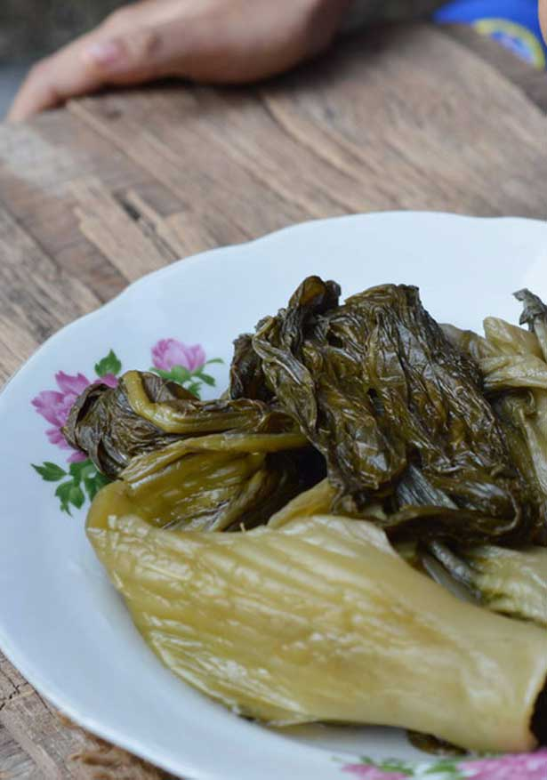

Contact Us
Resep
About Us
Home
Resep Sayur Sawi Asin

Bahan :
1 ½ air kaldu ayam
2 siung bawang putih, haluskan
5 buah cabai merah kering, ptong 2 cm
½ sdt bubuk ketumbar
100 gr wortel, iris serong
25 gr jamur kuping kering, rendam air hangat, iris tebal
1 lembar kembang tahu, potong kotak, rendam air hangat
2 sdm kecap manis
1 sdt minyak wijen
1 sdm kecap ikan
½ sdt gula pasir
Garam secukupnya
150 gr sawi asin, peras, potong 2 cm
5 lembar daun kucai, potong 1 cm
1 buah tahu sutera, potong 2 cm
½ buah bawang bombay, iris
Cara Membuat :
Langkah 1 : Didihkan air kaldu ayam bersama bawang putih, cabai kering dan ketumbar.
Langkah 2 : Masukkan wortel, jamur kuping dan kembang tahu. Tambahkan kecap manis, minyak wijen, kecap ikan, gula pasir dan garam, aduk rata. Masak hingga wortel setengah matang.
Langkah 3 : Masukkan sawi asin, daun kucai, tahu sutera dan bawang bombay. Masak hingga semua bahan matang.
Menyantap Sayur Sawi Asin dengan nasi hangat akan menambah selera makan anda, selamat menikmati semoga resep dari kami bisa membantu anda dalam menyajikan masakan terbaik untuk orang terkasih.